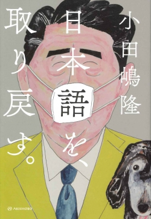

![]()
10:00
政治学概論Ⅰ《2025》
#9 前半のまとめ／国会中継
KEYWORDS
- 国会中継；委員会；審議；グループワーク；ディスカッション
Ⅰ. 前回の振り返り（授業の感想）
授業の感想：政治制度と政治過程
利益集団の目的
利益集団と聞くとはじめは自分の利益のみに執着している集団というイメージがあったが、授業を通して政府や政党に少数意見を届ける目的があると知り、利益集団に対するイメージが変わったため、このポイントが重要だと思った。また、利益集団になれない多数者は投票による意見表明をし、政治参加することができるという点も初めて理解した（大石さん）。
授業の感想：政治制度と政治過程
利益集団によって意見を伝えることが出来るという視点が重要であると考えた。
利益集団は特定の利益や価値を実現するために政府や政治に働きかける組織であり政権獲得を目的としない集団である。利益集団があることで少数派の意見を政治に届けることができ行動しやすいことがあげられる。その一方で一人一人であると多数者になると団結して行動することが難しいため選挙を行うことで政治参加を行い意見を届けることが出来る。現在の公民科の授業では投票で意見を届けることが主体とされており、利益集団によって意見が伝えられることも伝えていく必要があると考えた（小野さん）。
授業の感想：政治制度と政治過程
臨時国会の映像の中で、ふざけた答弁をしている議員や時間を守らない議員が見受けられた場面
私たちが政治参加できる年齢になり、どの議員に投票しようかや、どの党がいい政策を実施してくれそうか考える機会が増えた。しかし、今回の３限の動画を視聴して良い政策を実施してくれそうな党や議員を選んだとしても、肝心な議会で私たち有権者が求める答弁や対応をしてくれるか疑いの目を向けざるを得なくなったから。また、疑いの目を適度に持つことの大切さを学ぶことができたから（尾添さん）。
授業の感想：政治制度と政治過程
安住予算委員長による予算委員会での様子
予算委員会の様子を見たのが初めてだったことに加え、日本とイギリスとの違いの解説によって日本の予算委員会の特徴について理解することができたため。安住予算委員長に対してはSNSなどで「高圧的」「態度がでかい」などというコメントが寄せられていることをよく見る。しかしながら、予算委員会に関しては、時間を守る、会を円滑に進めることが最も重要であるとともに、そもそもた記憶と比べると日本の委員会が緩すぎるということを頭に入れておくことが重要だと感じた（西田さん）。
国会の質疑応答の動画
今日見た国会の質疑応答の動画は、大人同士が口論しているように見えて、正直怖いと感じた。しかし、日本の国会は他国と比べるとまだ緩いほうだと聞き、意外に思い印象に残ったのでこの動画のことを挙げた。質疑応答の時間を守らない議員が沢山いて、これを見た国民の印象を考えないのだろうかと思った（岸さん）。
授業の感想：政治制度と政治過程
委員会運営
日本の委員会が海外に比べて緊張感がないというのが印象的で面白かった。中道の安住幹事長が委員会の議長をされていた際にかなり厳しい言葉遣いで運営をされていた。ルールを守らず話し続ける議員などがおられ、時間厳守と厳しく言っておられるのが印象的であった。しかし議題によっては時間ではなく質疑を優先する必要性もあるのではないかと感じる。また、委員会を行うにも税金が使われていると思うので、参議院のように委員会の制度設計の段階で充実した質疑が行えるように無駄を省き緊張感を持って取り組むことができるようにする必要があるのではないかと感じた（小松原さん）。
授業の感想：政治制度と政治過程
妥協とcompromiseの部分
compromiseという言葉は翻訳すると妥協という意味になるが、compromiseを分けて意味を理解すると共に責任を引き受ける「合意」という意味になるということと、日本において政治は妥協はしない方がいいという考えの一方で、海外では政治に妥協はつきものであるという考えであるという先生の話も合わせて聞いて、語感も違うけれど、日本の政治における妥協に関する考え方はどのようにして構築していったのか気になった（河田さん）。
衆議院と参議院の違い。
衆議院と参議院では、委員会の数はほぼ変わらないのに、議席の数が参議院の方が少ないため、委員会への所属が多くなる。また、委員会も参議院の方が小さいため、議員は様々な知識を専門的に学ぶ必要があるから、知識も豊富であると思うが、衆議院議員と参議院議員のその仕事の量の差に違いが出てくるのではないかと思ったから。逆に、衆議院は委員会での仕事より選挙に時間を当ててるのかなと疑問に思った（髙尾さん）。
Ⅱ. 国会中継
国会中継：衆参両院
- 本会議、各種委員会ともにインターネット配信されている
- リアルタイム；アーカイブ
- 衆議院：リンク
- 参議院：リンク
- Cf. UK Parliament; Parliament TV
国会解説：政党
政党の国会チャンネル
政党の国会チャンネル（解説編）
- 自由民主党「【CafeSta】ウラ生☆衆議院予算委員会2023（2023.1.30)」」
- 立憲民主党国会情報「2024年2月5日 国会解説2024」
- 現在、どちらの政党も国会解説動画は実施していない模様
国会中継：マスメディア
TBS 荻上チキSession
- 「【特集】国会論戦珍プレー好プレー2025 臨時国会編」
- ゲスト：木村草太（憲法学）
- 論点：再審法改正；性犯罪に対する処罰；選択的夫婦別姓制度（通称制度）
- Podcast（3:00から20:00あたりまで）
委員会審議
⑴ 基本
- 委員会質疑
- 一問一答（衆：往復方式；参：片道方式）
- 基本的質疑
- 全閣僚が出席することが慣例；NHKの中継あり
⑵ 審議の流れ
- 趣旨の説明、補足説明
- 基本的質疑
- 一般的質疑
- 公聴会、分科会（参議院の場合は常任委員会への委嘱審査）
- 締めくくり質疑（参議院の場合は締めくくり総括質疑）
- 討論、採決
Ⅲ. グループワーク＆ディスカッション
国会中継を報道してみよう
趣旨
- ニュースで配信される国会中継は、切り貼りされたもの
- 「政治家は働いていない」「野党は批判ばかり」は本当か？
- 自分の目で見て、感じ、考えてみよう、そして言葉にしてみよう
国会中継を報道してみよう
タスク
- 見出し（新聞風）を付ける
- 15〜25字
- 寸評を書く
- 120〜200字
- 事実＋評価＋理由で構成すること
- 求められている記述は感想文ではない点に注意すること
国会中継を報道してみよう：見出しと寸評の例示
見出し
- 「対立ばかりが目立つ国会、議論は前に進まず」（22文字）
- 「答弁か回避か 緊張感に欠けた30分」（19文字）
- 「安全保障を盾に、疑問への答え欠く」（20文字）
寸評
委員会では、加藤議員が国際協力における日本の具体的な役割を示すよう政府に求めた。これに対し、森外相森は国際協調や理念の重要性を述べるにとどまり、実際の政策や行動計画には踏み込まなかった。両者のやり取りから、問題意識の違いは明確になったものの、政府としてどのような外交方針を取るのかは十分に示されず、議論が整理されたとは言い難い（163文字）。
国会中継を報道してみよう：寸評の留意点
Tip評価に関わる表現の言い換え例（感想的 → 寸評向き）
- 議論が噛み合わなかった → 論点をずらす答弁が続き、議論の焦点が意図的に曖昧にされた
- はっきりしなかった → 明確な立場表明を避ける姿勢が目立った
- うまく答えていなかった → 問いへの直接的な回答を避け、説明責任を果たしたとは言い難い
- 大臣は「コメントを控える」と述べた → 大臣は説明を拒絶した
- 質問がよくなかった → 論点が広すぎ、答弁側に選択の余地を与えてしまった
- 深掘りしていない → 答弁の曖昧さを指摘せず、議論を前進させられなかった
- 迫力がない → 政策上の責任に踏み込む構造になっていなかった
- まとまりがない → 複数の論点を一度に扱い、議論が拡散した
国会中継を報道してみよう：寸評の留意点
- 日本では、政治を観察し評価するための語彙が十分に共有されているとは言い難いため、自覚的に批評的な言葉を探すことが大切（評価語が曖昧で、判断を読み手に丸投げしている）
- 「どっちもどっち」という言説に回収されやすい
- 「どっちもどっち」を客観的・中立的・俯瞰的・バランスのよい記述だと勘違いしがち
- ➡︎ 観察力や思考能力の欠如というよりも、評価に関する語彙をもっていないため（？）
国会中継を報道してみよう：寸評の留意点 > 補足
イギリスの場合：レトリックの受容史
-
エリザベス1世
- 1593年、議会を開会させる際に議員たちに「うぬぼれた（vayne）話しや飽き飽きする（tedious）演説」をしないように警告
- フランシス・ベイコンらが補助金法案に反対したとき、女王はそれを「人気取り」（popularity）だと非難
-
レトリックの効能を説く者
扇動を静めるのに一番いい方法は、雄弁であり、優れた説得でございます。これらは、しばしば、敬虔な者、そして大衆に大きな効果をもたらします。その効果は、知恵と高潔な人生を讚えられるような名誉ある御方がお話しになれば、いっそう大きくなりましょう。……民衆のなかの言葉には、もっとも大きな力があるからです
国会中継を報道してみよう：寸評の留意点 > 補足
イギリスの場合：サミュエル・ジョンソン
最後に演説された貴族議員〔Hurgo院Heryef卿〕はあまりに偉大な雄弁の達人です。その巧みさゆえに、人は、彼の言葉を聞くに当たって、喜びから自然に生まれるあらゆる注意力を向けることがありません。聴き手の心には、部分的な表現や巧みな推論に惑わされるのではないか、という恐れから不安が生じるものです。しかし、彼はこのようなあらゆる不安を生じさせないほどに恐ろしい、理路整然と論じられる人（reasoner）なのです。諸君、私が常に恐れているのは、この貴族議員の想像力が与える装飾（ornaments）のなかで、誤謬が真実であるかのように見えすぎてしまうことなのです。そしてまた、理性の光によって導かれる自分自身を想像しながらも、その詭弁（sophitry）が私の知性（understanding）を惑わすことなのです。諸君、そこで私は、彼の装飾を再検討し、それが真実の力によるものなのか、それとも雄弁によるものなのか、私は試してみようと思う。

国会中継を報道してみよう：寸評の留意点 > 補足
現状も、結局のところ、平場の日常で政治を語ることが、タブー視されていることの裏返しだったりする。（原文改行）別の言い方をすれば、極論でしか語れないバカだけが、政治について発言する社会では、賢い人たちは沈黙しがちになるわけで、そうするとますますバカだけが政治発言を繰り返す結果、政治は、どこまでもバカな話題になって行く。（原文改行）21世紀の日本人は、普通の声量で、激することなく、互いの話に耳を傾けながら政治の話をするマナーを失って久しい。それゆえ、いまどき政治なんぞに関わって、ツバを飛ばし合っているのは、政治好きというよりは、単に議論好き論破好き喧嘩好きな、ねずみ花火みたいな連中ばかりという次第になる（小田嶋 (2020)）

国会中継を報道してみよう：個人ワークとグループワークの流れ
- クラス全体：国会中継を見る（30分）
- ポイントやキーワードを各自、メモする
- 個人ワーク：見出し（新聞風）を付ける（10分）
- グループワーク（30分）
- 見出しを見せ合い、もっともよい見出しを選ぶ
- 各自が作成した見出し、ポイント、キーワードをもとに寸評を作成する
- Google Formに提出（見出し、寸評、共通）
国会中継を報道してみよう：グループ
グループ
- トランプのカードを引いてグループを作ります
- グループの単位：同じ数字で集まる（♠️︎♦️♣️❤️）
国会中継を報道してみよう：グループ
グループワークの心理的安全性
Warning禁止 | マウンティング行為
- 知識ひけらかし型： 「〇〇も知らないの（呆れ顔）。高校で習ったと思うけど、教えてあげるよ（押し付けがましい）」
- 先取り型：「あー、この後の展開は◯◯だから、そこまで考えないとね」
- 比較優位型：「その感想は初心者っぽいね」 / 「自分はもっと難しい本を普段読んでるから、君の考えは物足りないかな」
- 発言の矮小化型：「その見方は浅いよ、本当はこう考えるべきなんだ」 / 「その感想はよくあるけど、重要なのは別のところだよ」 / 「それってあなたの感想ですよね」
国会中継を報道してみよう：国会審議
衆議院 文部科学委員会 2025年11月26日 (水)
-
文部科学行政の基本施策に関する件
- 委員長：斎藤洋明（自由民主党）
- 文部科学大臣：松本洋平（自由民主党）
- 質疑者①：菊田真紀子（立憲民主党）
- 質疑者②：石井智恵（国民民主党）
国会中継を報道してみよう：国会審議
個人ワーク：見出し（新聞風）を付ける（10分）
- グループワークで意見交換しやすいようにメモして下さい
- 教員への提出不要
国会中継を報道してみよう：国会審議
グループワーク：見出しと寸評作成（30分）
- 見出しを見せ合い、もっともよい見出しを選ぶ（誰かの案を元に修正可）
- 各自が作成した見出し、ポイント、キーワードをもとに寸評を作成する
- Google Formに提出（見出し、寸評、共通）
- 見出し：15〜25字; 寸評：120〜200字
- 提出物の良し悪しでディスカッションの質を評価します
20:00
References
References
小田嶋隆., 2020. 日本語を、取り戻す。. 亜紀書房.